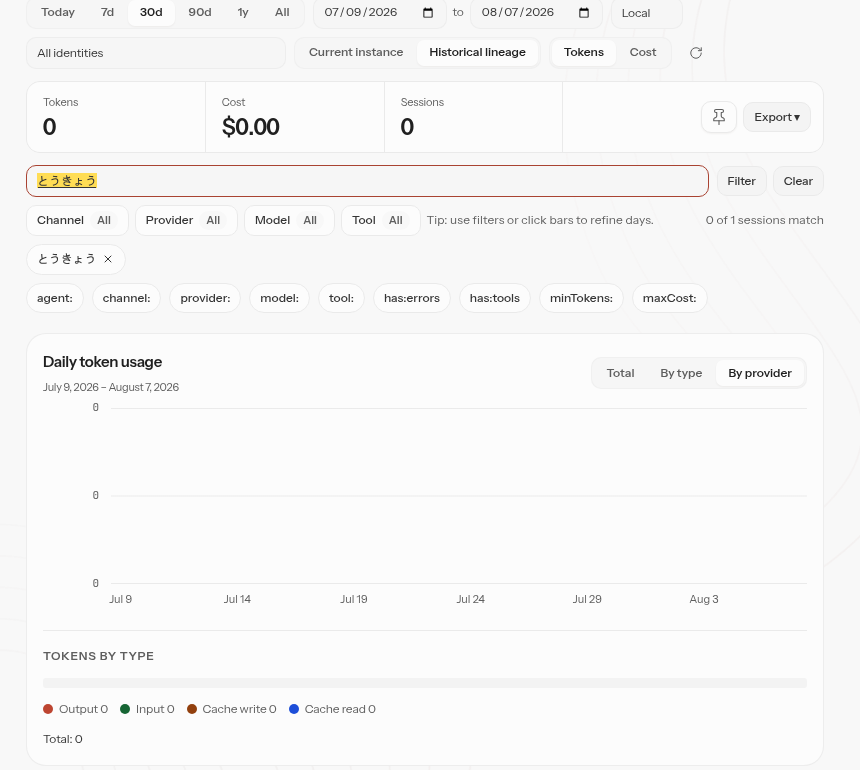
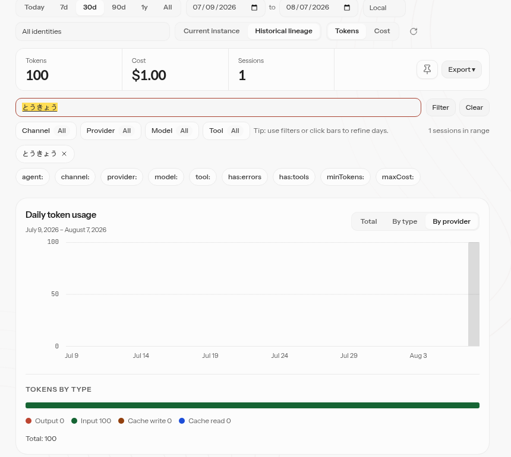

Control UI built from source · Playwright Chromium · mocked Gateway · the candidate とうきょう is
composed with Input.imeSetComposition (no script typing), then Enter is dispatched as a
trusted CDP key event
Same keystroke, two builds. Confirming the candidate with Enter applies the half-composed draft on main and leaves the query untouched with this PR; the deliberate Enter after the candidate is committed still applies the query in both.


Captured output, nothing retyped: the harness saved the keydown records, sessions.usage
request counts and status-line text to report-base.json / report-head.json (throwaway
files, not committed); the frames above are unedited screenshots of the running UI. The box's
pre-existing 250 ms draft debounce is untouched in both builds, so pausing mid-composition can still
apply an intermediate draft on its own — this change is about Enter.